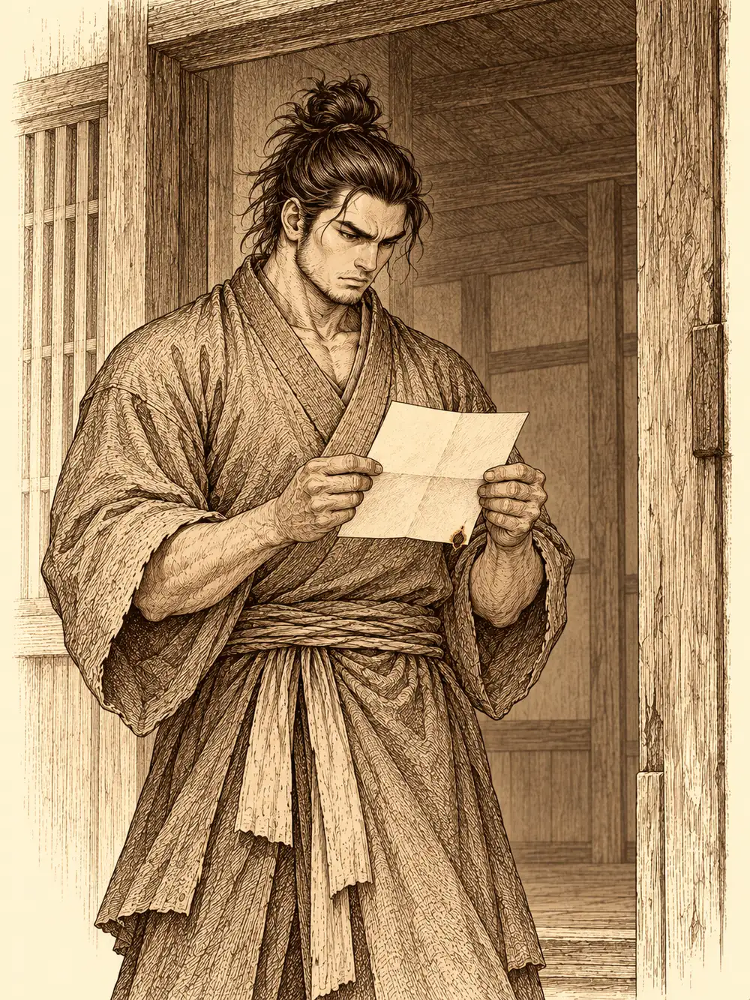

Capítulo 87
Lágrimas de fuego
Libro VI · La Puerta Negra
La carta estaba encajada en la rendija de la puerta, doblada con cuidado, y Shigeru la encontró al abrir por la mañana. Durante la noche había oído un ruido y no le había dado importancia.
Los momentos que pasé desde que llegué a Kuroto fueron emocionantes y divertidos a partes iguales. Viajar a una tierra extraña dejó de ser algo que me aterrorizaba y se volvió algo maravilloso. Aquí hice mi primer amigo, alguien especial con quien me ha gustado y me gustaría compartir mil aventuras. Pero no sé si estoy preparada para estas aventuras. Cada vez tengo más claro que no soy lo bastante adulta para esto. Debo hacerme más fuerte y madurar, porque si no, no podré volver a mirarte a la cara. Así que esta noche me iré con mi maestro. No sé si nos volveremos a ver. Gracias por todo, Shigeru. Si tiene que ser, nos volveremos a ver. Atentamente, Blaze. Te qui...
Ahí terminaba. Las últimas letras se habían quemado con la forma de una lágrima.
Shigeru fue a su habitación. Estaba vacía; no quedaba ni una de sus cosas. Salió a la calle, aunque sabía que era inútil, porque la carta había llegado de noche y ya era de día. Volvió a entrar y se sentó con el papel entre las manos.
Pasó un mes. La buscó por todas partes mientras se entrenaba con más dureza que nunca, para proteger a los suyos y, si volvía a encontrarla, para protegerla también a ella. Nadie la había visto. Hizo encargos pequeños, de esos que no llevan a ningún sitio: ayudar a una vecina, rescatar un gato. Y una tarde, con la caligrafía que había aprendido de niño, escribió en letras grandes sobre un papel un deseo. No se lo enseñó a nadie.
Lo estaba repasando cuando un brazo le rodeó el cuello desde atrás.
"Hola, mozo. ¿Qué estás escribiendo?".
Eran las tres hermanas shadar-kai. Chilia, Siltara y Narae se habían quedado rondando el gremio desde la muerte de Sirth, observando desde lejos lo que hacían los cazadores, sobre todo Maroxi, que llevaba tiempo enfermo. Comentaban sus desgracias como quien comenta una función de títeres: que si la hiena había muerto demasiado fácil, que si el león del cuento podía haber explotado también. Ahora una de ellas se le apoyaba en el hombro con toda la confianza del mundo.
"Un deseo. Reencontrarme con alguien muy importante para mí".
"Eso lo tienes fácil. La matamos a ella, te matamos a ti y ya estáis los dos en el mismo sitio".
"Preferiría hacerlo en vida, señorita. Para la muerte ya habrá tiempo".
Otra se limpiaba la mugre de las uñas con la punta de una daga. Al rato, con un gesto rápido de los dedos, una de ellas le quitó la carta de Blaze del cinturón, y Shigeru apenas notó el tirón. La desplegó en alto.
"Uy, mira. 'Mi primer amigo'. ¡Y hasta hay lágrimas!".
Siltara se interpuso con el martillo entre su hermana y el monje antes de que él pudiera recuperarla. Las tres se rieron. Al final, más por aburrimiento que por bondad, decidieron acompañarlo en la búsqueda. Una se le colgó del brazo y Siltara lo empujó por la espalda con el martillo para que echara a andar.
"Si me ayudáis, encantado", dijo Shigeru, soltándose. "Pero cuidado con lo que hacéis. No me dais buena espina".
Recorrieron Sho todo el día, preguntando hasta a los mendigos si habían visto a una niña que lanzaba fuego. En la panadería, la panadera recordó que Blaze había pasado por allí antes de irse y que había hablado de volver, quizá, al cabo de un mes. Una de las hermanas sugirió que a lo mejor estaba muerta, y le dio al monje unas palmaditas en la espalda, como si eso fuera un consuelo.
"Aunque lo estuviera, todavía tengo cosas por las que luchar en vida".
Volvieron a la base de noche. Bajo la puerta del cuarto de Blaze se escapaba una luz verde. Shigeru llamó. Nadie respondió. Abrió.
Sobre la cama flotaba un portal.
Ninguno de ellos había visto nunca algo así, pero las hermanas reconocieron lo que era: un conjuro muy poderoso, de los que abren paso entre planos. Chilia metió un dedo para ver qué pasaba. Siltara le dio un empujón con el martillo al monje, que la miró con fastidio y saltó dentro por su propio pie. Las tres fueron detrás.
Despertó en mitad de un mercado inmenso, más grande que cualquier ciudad que hubiera visto, Sho incluida. Olía a especias, a fritura y a fruta pasada. Alguien gritaba que tenía patatas baratas; otro, que vendía comida picante. Por encima de los puestos se alzaban dos edificios enormes: uno con un sombrero de mago pintado en la fachada, el otro con un escudo y una espada.
Shigeru le compró un par de patatas al vendedor y le preguntó por una muchacha llamada Blaze.
"Hay una chica que me ayuda a veces. Hace unos meses se me rompió el carro y me echó una mano. No era muy fuerte, pero me ayudó".
Unos meses. Shigeru frunció el ceño; para él solo había pasado uno. Las hermanas, que se habían entretenido toqueteando las mercancías de una joyería, se enteraron por la vendedora de que estaban en Blaz, la ciudad más grande y comercial de su continente. La ciudad se llamaba igual que la muchacha.
El monje se fue derecho al edificio de la magia. Dentro, el suelo estaba sembrado de círculos que se encendían al pisarlos y trasladaban a quien los pisaba: oficinas, escuelas de cada rama de la magia, campos de entrenamiento. Probó en un campo con gradas y dianas, y en una de ellas encontró la madera chamuscada. Señales de fuego. Pero no la vio. Volvió atrás y eligió el círculo de la escuela de evocación.
Al otro lado lo esperaba un hombre sentado, leyendo. Cerró el libro de golpe.
"Por fin. Te estaba esperando".
"¿Usted me conoce?".
"Por supuesto. Mi hija me ha hablado mucho de ti". Hizo una pausa. "Soy su padre adoptivo".
Le explicó que su mundo y Kuroto no corrían al mismo paso. Las dos dimensiones se sincronizaban cada cierto tiempo; para Shigeru había pasado un mes, y allí habían pasado dos años. Blaze estaba bien. Pero antes de dejar que la viera, quería saber si era digno de ella.
"Aunque no sea su padre de sangre, la quiero mucho. Quiero comprobar si puedo dejarla a tu cuidado".
"Lo comprendo. No soy padre, pero tengo una hermana".
"Entiendo que eres diestro en las artes marciales. Demuéstramelo".

Las mesas se apartaron solas hacia las paredes. Shigeru sacó la cadena y avisó de que sus golpes no buscarían matar. El hombre tomó una espada que había por allí y aseguró que no usaría toda su fuerza, aunque tampoco se lo iba a poner fácil. La primera estocada le dejó al monje un tajo en el costado y la segunda otro. Shigeru encajó, respiró y golpeó con cadena y puños, y alguno de sus golpes entró de verdad. Después el hombre dejó de herirlo y empezó a empujarlo una y otra vez, buscando hacerle hincar la rodilla. Shigeru no se arrodilló.
"Parece que lo haces bien. Y no te arrodillas ante nadie".
"Me está diciendo que, siendo su especialidad la magia, es así de diestro con la espada. Mis respetos".
El hombre le acercó una silla y le puso las manos encima. Las heridas se le cerraron con un calor suave.
Mientras tanto, las hermanas habían ido a parar al campo de entrenamiento. Allí la temperatura bajó de golpe. En mitad de la arena se alzó un ser gigantesco con un cuerno en la frente, y su aliento escarchó el aire.
"Por fin he revivido. Ahora que ya no está la dama de fuego".
A ellas aquello les pareció de lo más entretenido. Chilia lo derribó a golpes y lo dejó tendido en el suelo, aturdido; las otras dos lo maldijeron y le clavaron su magia oscura. La criatura se levantó al final de cada asalto con todas las heridas cerradas, como si no le hubieran hecho nada.
En la sala, el padre de Blaze le explicaba a Shigeru de qué se trataba. Había una profecía en Blaz. De vez en cuando aparecía una muchacha con el poder del fuego, y siempre acababa enfrentándose a su gran enemigo. Blaze todavía no estaba lista para vencerlo sola.
"Quizá le falte un poco de ayuda".
Le mostró lo que había pasado en aquellos dos años. Shigeru vio imágenes que se movían: a Blaze llegando a la ciudad de la mano de su maestro, con lágrimas de fuego cayéndole de los ojos, las mismas que habían quemado la carta. La vio crecer poco a poco y dejar de ser una niña, la vio ayudar a la gente por la calle, a un vendedor con el carro roto. Nunca había perdido la sonrisa.
"No ha dejado de pensar en ti".
Abrió un portal detrás del monje. Al otro lado, de espaldas, sentada ante un escritorio, una joven escribía algo. Había cambiado, pero Shigeru la reconoció enseguida.
"Blaze".
Ella se volvió y se quedó inmóvil.
"No puede ser".
"Cuánto has cambiado. Hace un mes eras casi una niña".
"Lo siento si no te gusta así. Tenía que hacerme más fuerte y madurar. Si no, no podríamos estar juntos".
"Nunca he dicho que no me guste. Solo me ha sorprendido".
Ella sonrió, y una lágrima le resbaló por la mejilla. Shigeru la abrazó.
"Te he echado mucho de menos. Y eso que yo solo he pasado un mes. Tú has pasado dos años".
"Ha sido duro. Pero sabía que algún día volveríamos a vernos".
Le habló de su padre, que la había recogido de pequeña cuando los suyos murieron en un incendio. Le dijo que en Kuroto se lo pasaba mejor, que allí siempre había gente pero pocos amigos. Shigeru la miraba sin acabar de creérselo, y ella le tocó el pecho con un dedo y le recordó lo que decía su maestro: lo importante es lo que hay dentro. Luego él se acordó de la profecía.
"Tu padre dice que tienes que enfrentarte a un demonio y que todavía no estás preparada".
"Ya era la hora. Pero no sé si podré hacerlo sola. ¿Me acompañas?".
"Por ti iría a las mismísimas llamas del infierno".
En la muñeca de Shigeru apareció entonces un brazalete con el símbolo de una llama, idéntico al que llevaba ella. Se abrió otro portal, y los dos lo cruzaron juntos.
Aparecieron en el campo de entrenamiento junto a las hermanas. Los puños de Shigeru ardían, y sus armas también, con un fuego que a él no le quemaba. Cuando el primer golpe alcanzó al demonio, aquel fuego le mordió la piel que hasta entonces apenas habían conseguido dañar.
La criatura dejó de prestar atención a las hermanas y fue a por Blaze.
"Ese maldito fuego. Te voy a destruir".
Shigeru lo apartó de ella a golpes de cadena. Chilia se desvaneció en una bandada de cuervos negros y reapareció en otro punto del campo con los ojos oscuros como pozos; una y otra vez dejó al enemigo aturdido, sin poder moverse ni hablar. Narae y Siltara lo castigaban con su magia oscura. Blaze lanzó sus llamas. Y Shigeru, con el fuego prestado en los nudillos, le encadenó puñetazo tras puñetazo hasta que el gigante se tambaleó, se dobló y empezó a deshacerse.
"Volveré", rugió mientras se desintegraba. "Esto no ha terminado. Volveré dentro de trescientos años".
Una de las hermanas le arrancó un pelo al vuelo y lo enseñó con alegría, pero el pelo se desvaneció entre sus dedos junto con todo lo demás.
"Tu padre decía que no estabas preparada", dijo Shigeru. "Y fíjate".
"No estaba preparada para derrotarlo sola. Pero contigo sí".
Las hermanas no tardaron en volver a lo suyo. Una le dijo a Blaze que se había llevado al monje un par de veces mientras ella no estaba, y Blaze solo la miró; en su mano se encendió una llama muy grande, y a las tres se les quitaron las ganas de seguir.
El padre las observaba desde las gradas. Abrió un portal bajo sus pies sin avisar y les explicó que debían volver ya: si no, perderían la ocasión de regresar a Kuroto durante dos meses. Reconoció también que había sido él quien había abierto el primero, en la habitación de Blaze. Las tres se cayeron dentro protestando. Una de ellas le dedicó un gesto obsceno antes de desaparecer.
A la pareja la dejó un rato más. Blaze le enseñó la ciudad a Shigeru: los puestos, la comida picante que tanto le gustaba, el vendedor de patatas al que había ayudado con el carro.
Volvieron a la base de noche. Las hermanas ya estaban allí, y no dejaban de cuchichear.
"No hay nada mejor que un segundo hogar", dijo Blaze.
"Me alegro de que lo consideres un hogar".
Shigeru sacó entonces el papel del deseo. Blaze recordó lo que hacían en Kuroto con los deseos escritos y prendió una llama en la punta del dedo. Lo quemaron juntos. Mientras el papel se retorcía y se hacía ceniza, él le dijo lo que había escrito: que quería seguir viendo su sonrisa durante el resto de su vida.
Las hermanas se acomodaron como si fueran a ver una función y pidieron algo de comer. Blaze no les hizo caso. Miraba a Shigeru, y el humo del deseo subía despacio entre los dos.